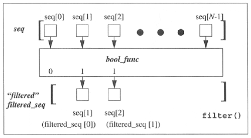

| < BACK | Make Note | Bookmark | CONTINUE > |
filter()
The second built-in function we examine in this chapter is filter(). Imagine going to an orchard and leaving with a bag of apples you picked off the trees. Wouldn't it be nice if you could run the entire bag through a filter to keep just the good ones? That is the main premise of the filter() function.
Given a sequence of objects and a "filtering" function, run each item of the sequence through the filter, and keep only the ones that the function returns true for. The filter() function calls the given Boolean function for each item of the provided sequence. Each item for which filter() returns a non-zero (true) value is appended to a list. The object that is returned is a "filtered" sequence of the original.
If we were to code filter() in pure Python, it might look something like this:
def filter(bool_func,
sequence):
filtered_seq = []
for eachItem in
sequence:
if apply(bool_func, (eachItem,)):
filtered_seq.append(eachItem)
return filtered_seq
One way to to understand filter() better is by visualizing its behavior. Figure11-1 attempts to do just that.
Figure 11-1. How the filter() Built-in Function Works
In Figure11-1, we observe our original sequence at the top, items seq[0], seq[1], … seq[N-1] for a sequence of size N. For each call to bool_func(), i.e., bool_func(seq[0]), bool_func(seq[1]), etc, a return value of 0 or 1 comes back (as per the definition of a Boolean function—ensure that indeed your function does return 0 or 1). If bool_func() returns true for any sequence item, that element is inserted into the return sequence. When iteration over the entire sequence has been completed, filter() returns the newly-created sequence.
We present below a script which shows one way to use filter() to obtain a short list of random odd numbers. The script generates a larger set of random numbers first, then filters out all the even numbers, leaving us with the desired dataset. When we first coded this example, oddnogen.py looked like the following:
from random import randint
def odd(n):
return n % 2
def main():
allNums = []
for eachNum in range(10):
allNums.append(randint(1, 101))
oddNums = filter(odd, allNums)
print len(oddNums), oddNums
if __name__ == \q__main__\q:
main()
The script consists of two functions: odd(), a Boolean function which determined if an integer was odd (true) or even (false), and main(), the primary driving component. The purpose of main() is to generate ten random numbers between one and a hundred; then filter() is called to remove all the even numbers. Finally, the set of odd numbers is displayed, preceded by the size of our filtered list.
Importing and running this module several times, we get the following output:
>>> import oddnogen >>> oddnogen.main() 4 [9, 33, 55, 65] >>> >>> oddnogen.main() 5 [39, 77, 39, 71, 1] >>> >>> oddnogen.main() 6 [23, 39, 9, 1, 63, 91] >>> >>> oddnogen.main() 5 [41, 85, 93, 53, 3]
On second glance, we realize that the odd() function can be replaced by a lambda expression to pass to filter(), and it is this modification which gives us our final oddnogen.py script. The code is given in Example 11.5.
Example 11.5. Odd Number Generator (oddnogen.py)
This simple program generates ten random numbers between one and one hundred, then filters out all the even ones. The program then displays the total number filtered out and the resulting list of odd numbers.
<$nopage> 001 1 #!/usr/bin/env python 002 2 003 3 from random import randint 004 4 005 5 def main(): 006 6 007 7 allNums = [] 008 8 for eachNum in range(10): 009 9 allNums.append(randint(1, 100)) 010 10 oddNums = filter(lambda n: n % 2, allNums) 011 11 print len(oddNums), oddNums 012 12 013 13 if __name__ == '__main__': 014 14 main() 015 <$nopage>
| Last updated on 9/14/2001 Core Python Programming, © 2002 Prentice Hall PTR |
| < BACK | Make Note | Bookmark | CONTINUE > |